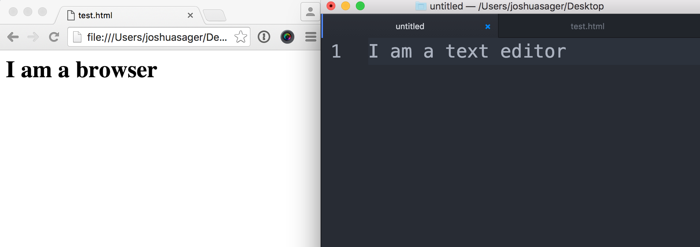

You will need a text editor and a browser.
And these source code files.
These source code files.
In class 4 we will need a local server
If you don't know how to set one up let me know and we will get you set up before you leave today
Nearly all programming languages have the same core fundamentals. Which are the following:
At the time these slides were authored there are only 33 reserved words. Which is the core part of the language. I find that encouraging!
Most everyday development only requires less than half of them.
|
break case catch class const continue debugger default delete do else |
export extends finally for function if import in instanceof new return |
super switch this throw try typeof var void while with yield |
|
break case catch class const continue debugger default delete do else |
export extends finally for function if import in instanceof new return |
super switch this throw try typeof var void while with yield |
This means you only need 3 things.
JavaScript is loaded into the HTML page via the script tag.
window.confirm('Do you like JavaScript?');
<script src="js/main.js"></script>
Don't worry about looking thigs up. It's common.
Here are some resources that can help
The console is a great way to:
console.log(); is a special instruction that can only be seen in the developer tools console. The console is a GREAT debugging tool. Most modern browsers have a console.
It would be a good idea to spend some time learning more about web developer tools with your favorite browser because it can save you a lot of time debugging.
Arrays are lists that contain values.
You can put different types of data into an array.
var rainbowColors = ['Red', 'Orange', 'Yellow', 'Green',
'Blue', 'Indigo', 'Violet'];
var lotteryNumbers = [33, 72, 64, 18, 17, 85];
var myFavoriteThings = ['Broccoli', 1024, 'Sherlock'];
Let's check the documentation for arrays.
Objects contain the following:
Note the properties and methods for arrays.
This documention is great because you can click on nearly any property or method and see an example.
It is very handy when looping
But shouldn't the image link to some place?
That is our cliffhanger for the next section.